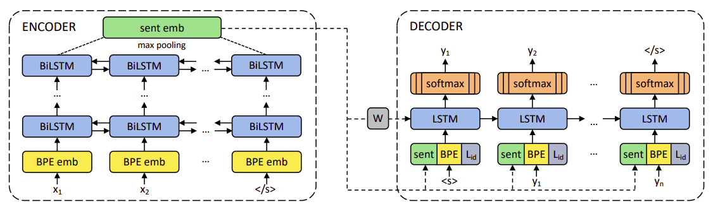
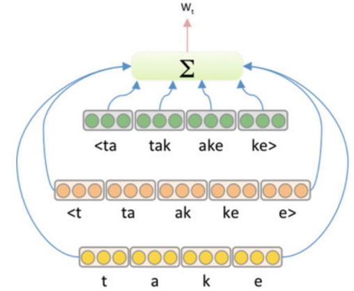
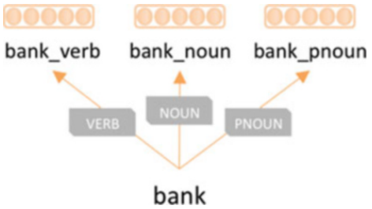
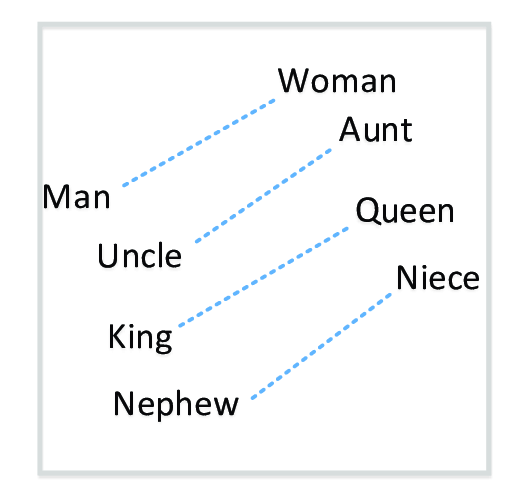
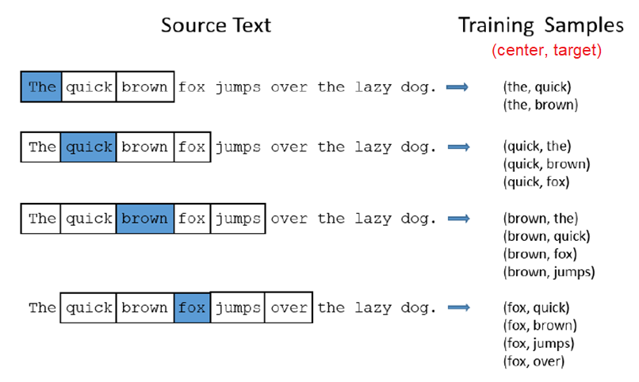

2019
-

LASER
LASER stands for “Language-Agnostic Sentence Representation”. LASER is an encoder-decoder architecture proposed by FAIR in 2019 and published in their paper: Massively Multilingual Sentence Embeddings for Zero-Shot Cross-Lingual Transfer and Beyond. The official code for this paper can be found in the Fairseq official GitHub repository: fairseq/laser. …
2018
-

Contextualized Word Embedding: ELMO & BERT
In the past few years, a number of new methods leveraging contextualized embeddings have been proposed. These are based on the notion that embeddings for words should be based on contexts in which they are used. This context can be the position and presence of surrounding words in the sentence, paragraph, or document. …
2017
-

Subword Embedding
Methods such as word2vec or GloVe ignore the internal structure of words and associate each word (or word sense) to a separate vector representation. For morphologically rich languages, there may be a significant number of rare word forms such that either a very large vocabulary must be maintained or a significant number of words are treated as out-of-vocabulary (OOV). …
2016
-

De-biasing Word Vectors
In this paper: Man is to Computer Programmer as Woman is to Homemaker? Debiasing Word Embeddings published in 2016, the researchers examined the gender biases that can be reflected in a word embedding and explore some algorithms for reducing the bias. …
2015
-

sense2vec
One of the limits of word2vec is polysemy, which means that one word could have multiple meanings or senses. For example, the word “bank” could be a verb meaning “do financial work” or a noun meaning “financial institution”. And this problem is known in NLP by the name of “word-sense disambiguation”. In 2015, Andrew Trask proposed a model in his paper: Sense2Vec - A Fast And Accurate Method For Word Sense Disambiguation In Neural Word Embeddings. called “sense2vec”. …
2014
-

GloVe
GloVe (Global Vectors for Word Representation) is a model released in 2014 by Stanford NLP Group researchers Jeffrey Pennington, Richard Socher, and Chris Manning for learning word embedding and published in the paper: GloVe: Global Vectors for Word Representation. The GloVe authors present some results which suggest that their model is competitive with Google’s popular word2vec package. …
-

Sentence Embedding
Here, we are going to talk about an important issue that tried to use the Word Embedding to produce a sentence embedding. By sentence embedding, we mean to provide a vector of $d$ length that has the meaning of the sentence in a numerical form; the same form as we did with word embedding. …
2013
-

Word2Vec
Word2Vec stands for “word-to-vector” is a model architecture created by Tomáš Mikolov from Google in 2013 and published in the paper: Efficient Estimation of Word Representations in Vector Space. This model aims at computing continuous vector representations of words from very large data sets. …
2008
-

t-SNE
One of the popular things to do with word embedding, is to take this N-dimensional data and embed it in a two-dimensional space so that we can visualize them. The most common algorithm for doing this is the t-SNE algorithm created by Laurens van der Maaten and Geoffrey Hinton in 2008 and published in this paper: Visualizing data using t-SNE. …